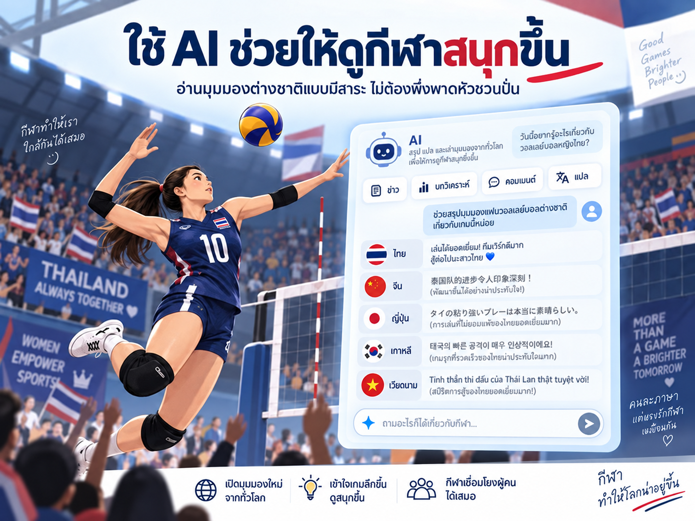

ใช้ AI ดูวอลเลย์บอลหญิงไทยให้สนุกขึ้น โดยไม่ต้องพึ่งพาดหัวชวนปั่น
{kind=link}

แฟนวอลเลย์บอลหญิงไทยน่าจะคุ้นกับคลิปพาดหัวแนว “ต่างชาติอึ้ง” “ทั้งเอเชียเดือด” “ช็อกโลก” หรือ “คอมเมนต์สนั่น” แต่หลายครั้งเนื้อหาจริงไม่ได้แรงอย่างพาดหัว และเราแทบไม่มีทางรู้ว่าความเห็นที่ถูกเลือกมานั้นเป็นตัวแทนของแฟนกีฬาประเทศนั้นจริงเพียงใด
AI เปิดทางเลือกใหม่ให้เราออกไปสำรวจบทสนทนาด้วยตัวเองได้ โดยตั้งคำถามให้ระบบค้นหลายแหล่ง แยกประเทศ แยกประเภทของข้อมูล และบอกข้อจำกัดของหลักฐาน แทนการรอให้ใครสักคนเลือกเฉพาะประโยคที่ทำให้เราสะใจ
ความสนุกเกิดจากการเห็นเกมเดียวกันผ่านหลายสายตา
เมื่ออ่านข้ามภาษาและข้ามชุมชน เราอาจพบว่าบางประเทศชื่นชมทีมไทยในเรื่องที่แฟนไทยไม่ทันสังเกต บางประเทศวิจารณ์จุดเดียวกับที่เราถกเถียงกันเอง และบางประเทศก็ไม่ได้สนใจทีมไทยมากอย่างที่พาดหัวบางชุดทำให้เข้าใจ
สิ่งที่น่าสนใจที่สุดจึงไม่ใช่การตามหาว่าใคร “อึ้ง” หรือใคร “ยอมรับไทย” แต่คือการเห็นว่าแฟนกีฬาแต่ละประเทศอ่านเกมเดียวกันต่างกันอย่างไร ทั้งในแง่แท็กติก ผู้เล่น จุดแข็ง จุดอ่อน และระดับการแข่งขัน
Prompt สำหรับสำรวจข่าวและมุมมองแฟนกีฬาต่างประเทศ
นำ prompt ด้านล่างไปใช้กับ AI ที่ค้นเว็บและแสดงแหล่งอ้างอิงได้ โดยเติมชื่อการแข่งขัน คู่แข่ง วันที่ หรือรายละเอียดของนัดที่สนใจ เพื่อให้ผลค้นเฉพาะเจาะจงขึ้น
AI ไม่ได้มีไว้แค่ช่วยทำงาน แต่ช่วยให้เราเห็นโลกกว้างขึ้นได้
การใช้ AI แบบนี้ไม่ได้รับประกันว่าทุกคำตอบจะถูกต้อง ผู้ใช้ยังต้องเปิดแหล่งที่มา ดูวันที่ ตรวจว่าคอมเมนต์มาจากชุมชนใด และระวังการสรุปกว้างเกินหลักฐาน แต่ถ้าตั้งโจทย์ดี AI ก็ช่วยลดกำแพงภาษาและพาเราไปเห็นบทสนทนาที่ไม่เคยเข้าถึงมาก่อนได้
กีฬาเชื่อมโยงผู้คนได้เสมอ และ AI ก็ช่วยให้เราอ่านความเชื่อมโยงนั้นอย่างลึกขึ้น สนุกขึ้น และเคารพทั้งทีมไทยกับคู่แข่งมากขึ้น โดยไม่ต้องพึ่งพาความโกรธ ความสะใจ หรือภาพเหมารวมของคนทั้งประเทศ